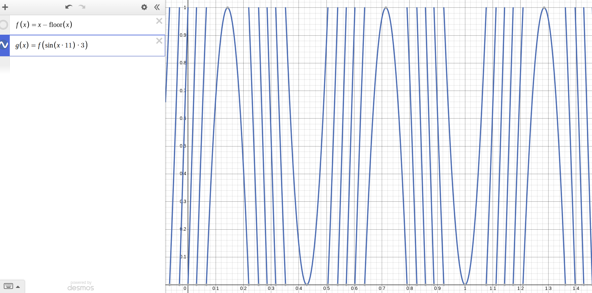
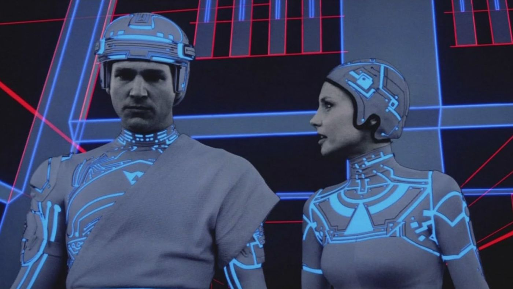
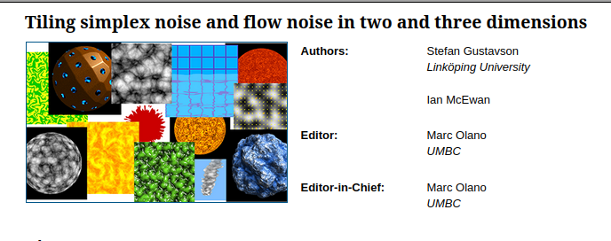

Programming Art
Mathematical Techniques for Artistic Coding
Inspired by real artists
Amber Whitehead
math witch
Jun. 28, 2026
 Danielle Navarro
Danielle Navarro
- PhD Univ. Adelaide
Mathematical psychology - Works in pharmacometrics
- R language
- Author:
Learning Statistics with R
ggplot2: the book
data witch
Silhouettes (2021)

Night Tree 05 534
Pseudo-randomness at every pixel independently
unsafe translate
unsafe static
safe translate
safe static

simplified for graphing
value depends mostly on how you sample it
The only algorithm to win an Academy Award.
(Ken Perlin, Academy Award for Technical Achievement, 1997)

Tron, 1982.

Smooth noise
translate xy
translate z
Natural noise
translate xy
translate z
basic idea: f(f(f(p) + p))
Use noise as prob density function for accept/reject (whitenoise dither)
translate z
static
Use noise as prob density function for accept/reject (whitenoise dither)
translate z
static
Hearts, Sampled Unwisely (2020)

Heart 01 09